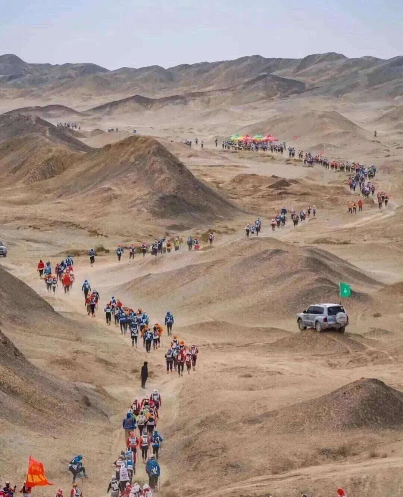
「戈友精神-不東精神」就是
什么是不东精神？
20年戈赛，20万+戈友，走出了一条属于当代中国创业者的精神之路。 20年戈友文化的凝练，是所有创业者“途西行、志东归”的精神公约数。 那些在极限环境里的挣扎、互助与超越，本身就是一场极高强度的“行为艺术”。
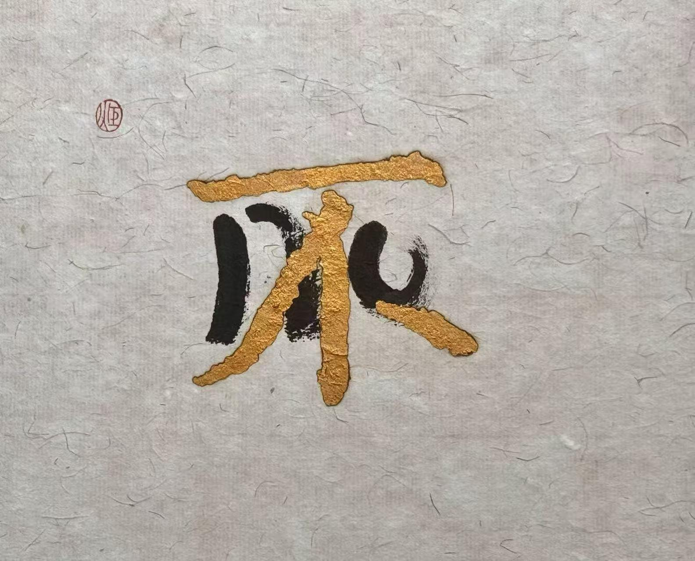
以不东精神为核
以艺术为管道
以引领未来为基点
从戈壁到世界

「戈友精神-不東精神」就是
20年戈赛，20万+戈友，走出了一条属于当代中国创业者的精神之路。 20年戈友文化的凝练，是所有创业者“途西行、志东归”的精神公约数。 那些在极限环境里的挣扎、互助与超越，本身就是一场极高强度的“行为艺术”。
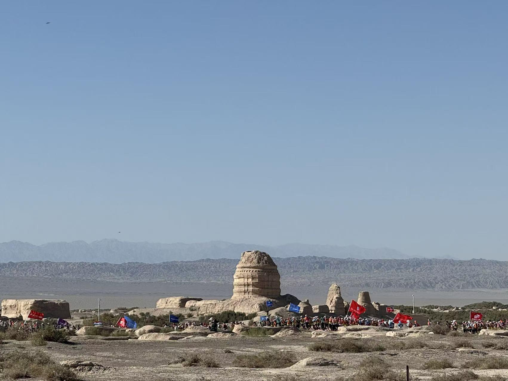
源起
不東艺术中心作为不东文化发展中心的载体之一，旨在以艺术为媒介， 将戈壁上的「先锋、体育精神、强者」、「长期主义」--即「不东精神」， 转化为可永续传递的能量。让那束光，从荒漠走向世界。
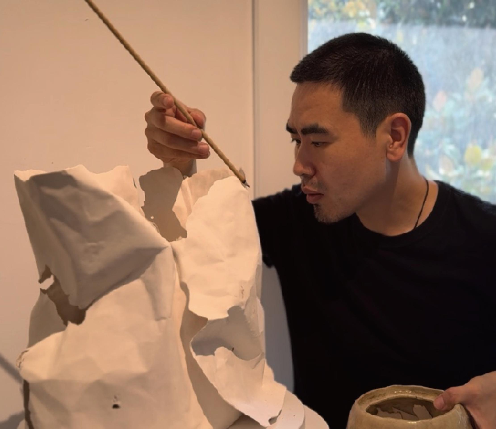
开拓者
不东艺术中心艺术总监。戈友精神践行者 + 全球视野创作者。 他的创作始终围绕“透过物象，探索其背后的潜能”展开。 所谓「不东精神」，既是一种认知模式，也是一种思考维度，如一束无碍之光、一双无形之眼。
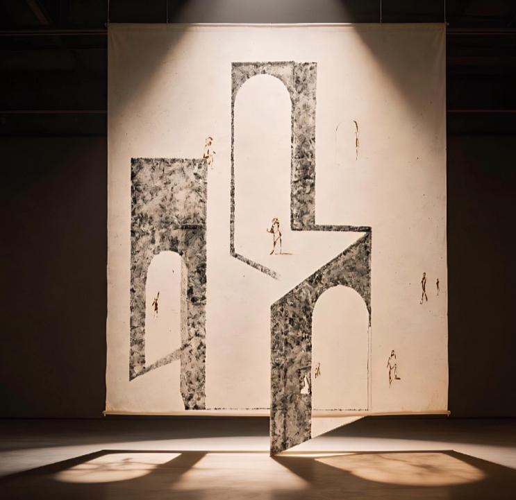
转译
它正如香火灼穿后留下的孔洞--那是更高维度的光照入的入口； 亦如戈壁上的行迹，让我们得以洞见戈友们对生命真谛的极致探索， 以及那份源自深处的极致魅力--“和合共生”。
赛事视觉
让“不東精神”进入更年轻、更公共的现场：速度、耐力、团队与戈壁经验被转译成可传播的视觉事件。
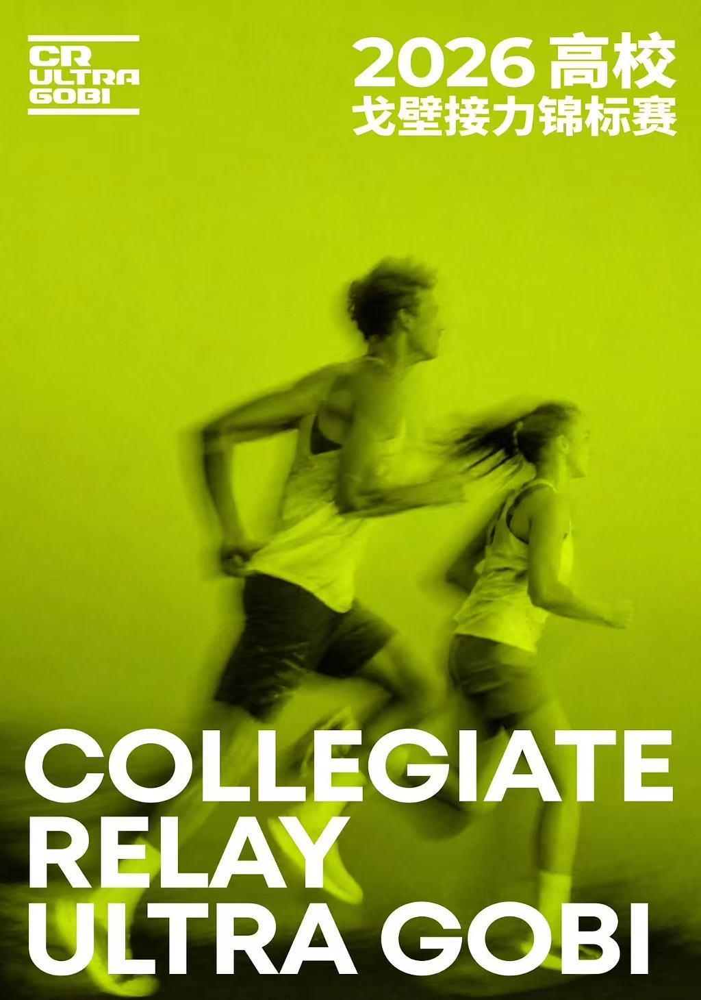
视觉档案
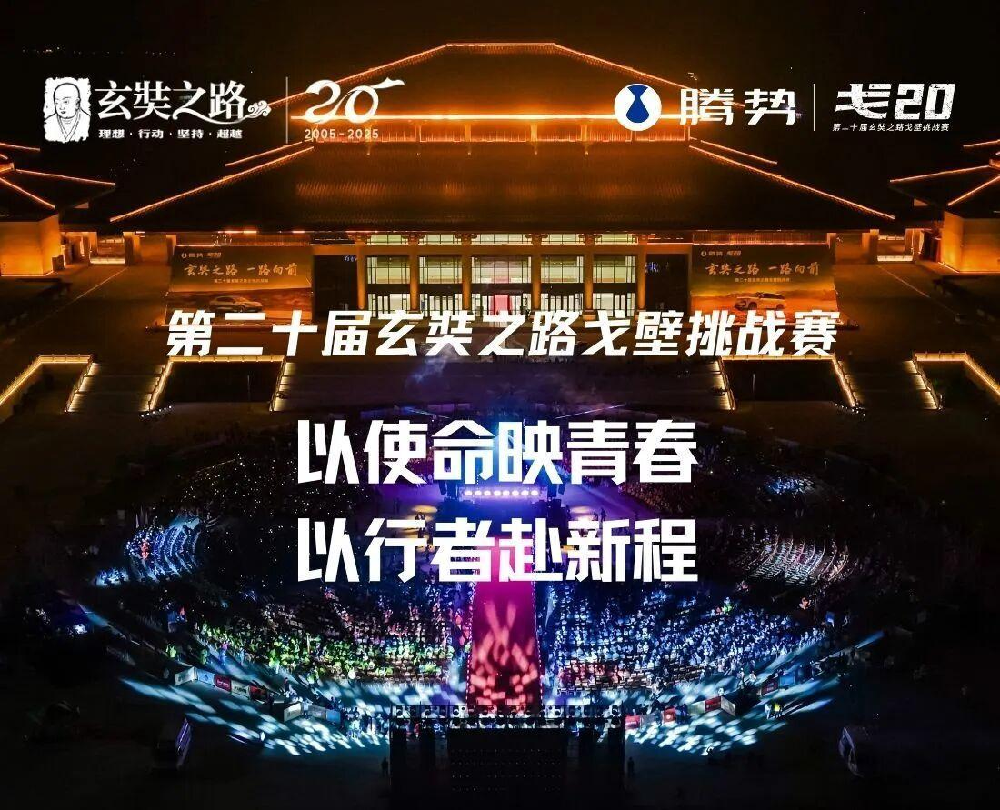
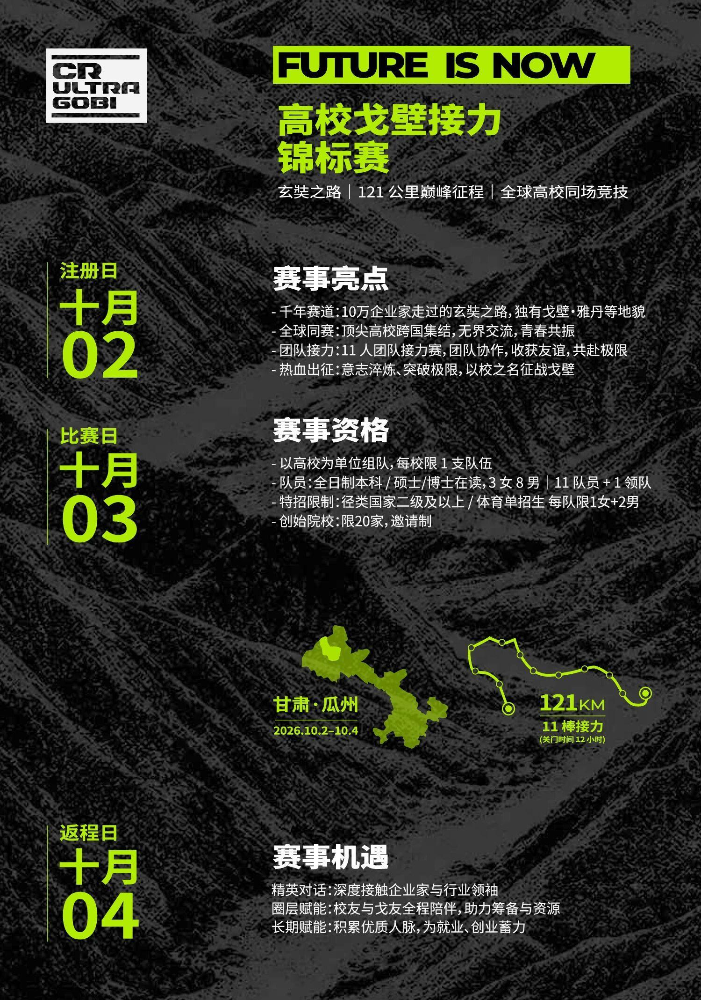
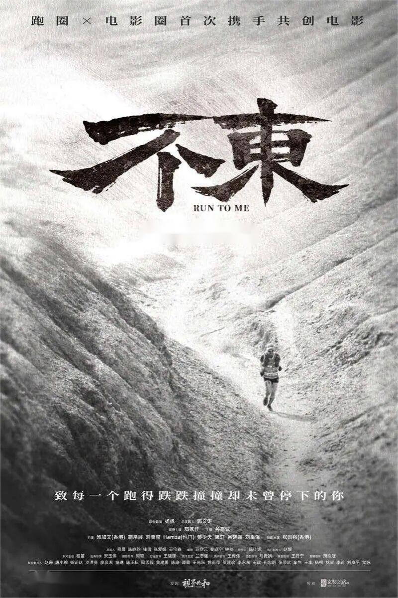
海宇作品
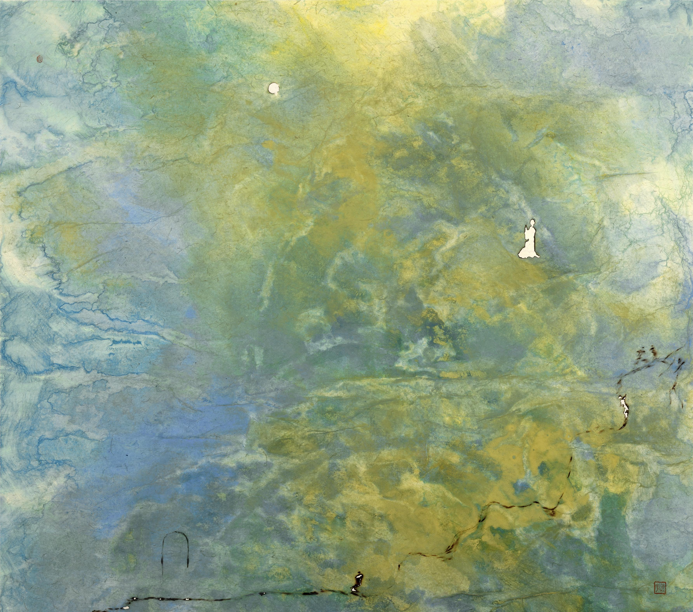
先锋
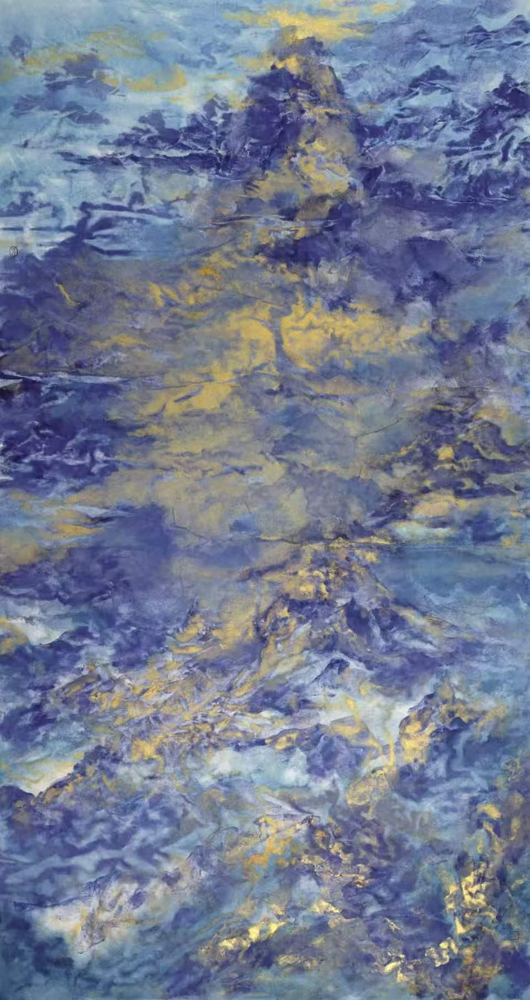
强者韧性
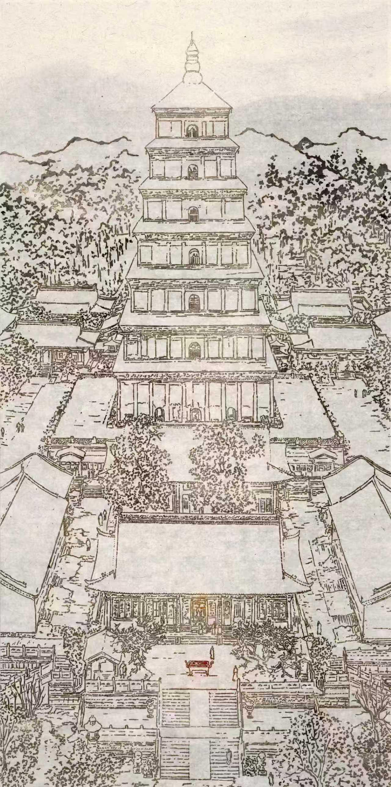
体育精神/长期主义
破局
首个“戈壁精神+艺术+创业”融合样本-上海
通过扶持青年创作者与公共艺术培育，持续激活区域文旅文化活力，优化城市消费氛围。
超100万人次，形成显著的文化溢出效应。
绑定20年高净值戈友社群。
策展/IP授权/孵化基金多曲线。
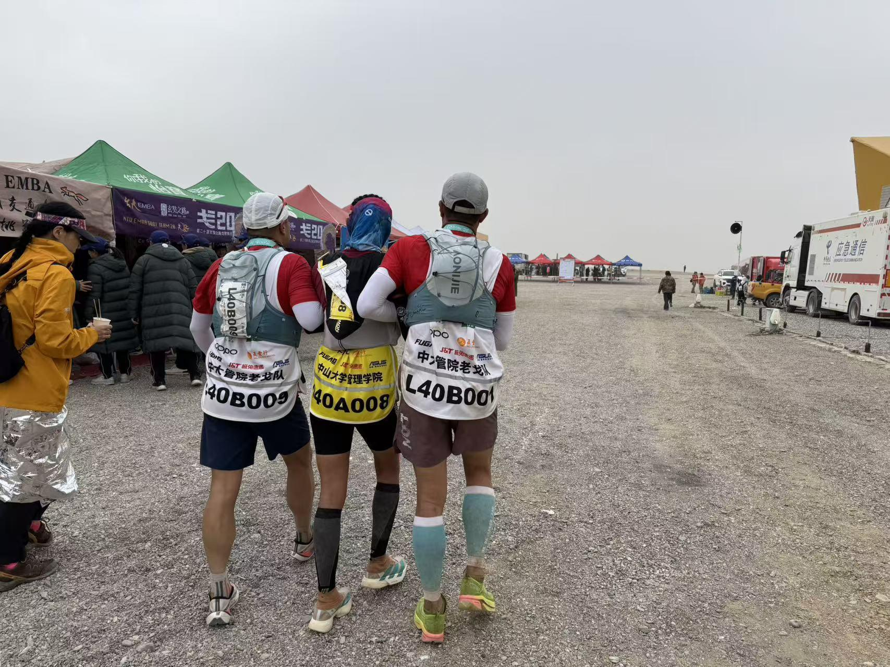
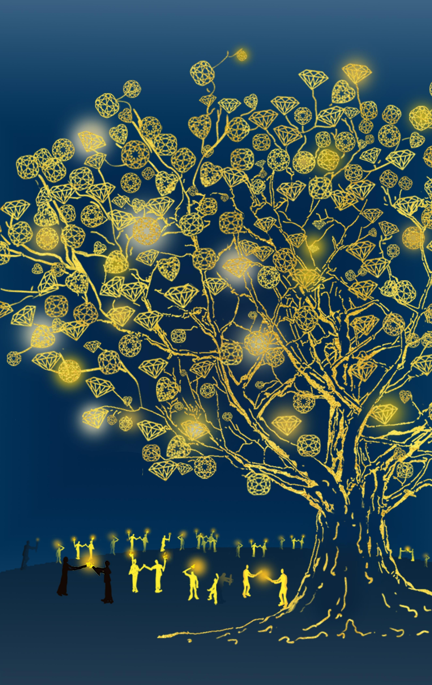
构建“艺术+”社会赋能平台
将戈壁精神转化为公共文化IP，赋能文旅公共服务与城市品牌升级。
挖掘并弘扬新时代奋斗者的艺术精神与美学，树立社会典范。
扶持青年艺术创作与创新创业实践。践行“以未来的视野指引当下”的理念。
共建同行 · 光耀东归
而是「东归」路上的同行共建人，是这束精神之光的传递者与守护者。
尊享不東艺术平台直通权，开启与艺术家及戈友社群的深度对话，见证艺术种子的萌芽。
授予“不東公益伙伴”殊荣，赋能企业社会责任（CSR）品牌形象，优先参与年度联合共创计划。
荣膺不東艺术中心“创始共建人”，共享不东精神全球传播的品牌声量与圈层荣耀，共筑文化地标。
致同行者
“这世界从来都不在外在，是我们内在的映射。”
不東艺术中心，等你一起把光传下去。